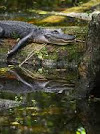

The Florida Keys are a string of tropical islands stretching about 120 miles off the southern tip of the U.S. state of Florida, between the Atlantic Ocean and Gulf of Mexico. They’re known as a destination for fishing, boating, snorkeling and scuba diving. The southernmost city of Key West is famous for Duval Street’s many bars, Mallory Square’s nightly Sunset Celebration and the Ernest Hemingway Home and Museum.

South Beach is known for its beaches and the glamorous scene around its happening nightspots and celebrity-chef eateries. Chain stores and indie fashion shops line pedestrian shopping strip Lincoln Road Mall. On Ocean Drive, known for its well-preserved art deco architecture, outdoor cafes offer a ringside view of the scene. Museums include the Wolfsonian-FIU, which has a collection of modern art and objects.

Everglades National Park is a 1.5-million-acre wetlands preserve on the southern tip of the U.S. state of Florida. Often compared to a grassy, slow-moving river, the Everglades is made up of coastal mangroves, sawgrass marshes and pine flatwoods that are home to hundreds of animal species. Among the Everglades' abundant wildlife are the endangered leatherback turtle, Florida panther and West Indian manatee.
